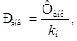
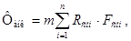
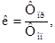
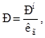
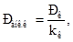
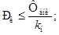
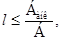
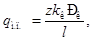
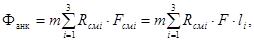

Ведомственные строительные нормы
ЗАКРЕПЛЕНИЕ ТРУБОПРОВОДОВ
ВМОРАЖИВАЕМЫМИ
СТЕРЖНЕВЫМИ АНКЕРАМИ
НА ВЕЧНОМЕРЗЛЫХ ГРУНТАХ
(для опытно-промышленных участков)
ВСН 221-87
Миннефтегазстрой
МИНИСТЕРСТВО
СТРОИТЕЛЬСТВА ПРЕДПРИЯТИЙ
НЕФТЯНОЙ
И ГАЗОВОЙ ПРОМЫШЛЕННОСТИ
ВСЕСОЮЗНЫЙ
НАУЧНО-ИССЛЕДОВАТЕЛЬСКИЙ ИНСТИТУТ
ПО СТРОИТЕЛЬСТВУ МАГИСТРАЛЬНЫХ ТРУБОПРОВОДОВ
Киевский филиал ВНИИПКтехоргнефтегазстроя
МИНИСТЕРСТВО ГАЗОВОЙ ПРОМЫШЛЕННОСТИ
ЮжНИИгипрогаз
Москва 1987
РАЗРАБОТАНЫ И ВНЕСЕНЫ Всесоюзным научно-исследовательским институтом по строительству магистральных трубопроводов и Киевским филиалом Всесоюзного научно-исследовательского и проектно-конструкторского института техники, технологии и организации управления строительством предприятий нефтяной и газовой промышленности Миннефтегазстроя:
Р.М. Шакиров - д-р техн. наук, директор ВНИИСТа,
Б.П. Пляцек - директор КФ ВНИИПКтехоргнефтегазстроя,
П.А. Вислобицкий - канд. техн. наук, зав. лабораторией,
Х.К. Мухаметдинов - зав. отделом ВНИИСТа,
В.Е. Поляков - канд. техн. наук, зав. лабораторией,
А.Б. Айнбиндер - канд. техн. наук, зав. лабораторией,
Р.М. Хафизов - канд. техн. наук, ст. научн. сотр.
Э.И. Дизер - канд. техн. наук, ст. научн. сотр.,
Н.Г. Шпет - канд. техн. наук. ст. научн. сотр.
ЮжНИИгипрогазом Мингазпрома:
Е.В. Ермолаев - зам. гл. инженера,
В.С. Сумароков - зам. нач. отдела,
Н.Н. Желудков - гл. специалист.
Главсибтрубопроводстроем Миннефтегазстроя:
С.П. Вельчев - начальник технического управления,
И.Г. Дорошенко - начальник технического отдела треста Севертрубопроводстрой.
ПОДГОТОВЛЕНЫ К УТВЕРЖДЕНИЮ Главным техническим управлением Миннефтегазстроя:
В.А. Шукаев - канд. техн. наук, зам. начальника Главного технического управления
СОГЛАСОВАНЫ Главным техническим управлением Миннефтегазстроя
Н.И. Курбатов - главный инженер управления,
Техническим управлением Мингазпрома:
Э.Л. Вольский - главный инженер управления.
|
Министерство строительства предприятий нефтяной и газовой промышленности |
Ведомственные строительные нормы |
ВСН 221-87 Миннефтегазстрой |
|
|
Закрепление трубопроводов вмораживаемыми стержнями
анкерами |
|||
|
Впервые |
|
|
Внесены |
Утверждены |
Срок введения в действие |
1.1. Настоящие Ведомственные строительные нормы распространяются на проектирование и строительство магистральных трубопроводов на вечномерзлых грунтах с использованием вмораживаемых стержневых анкеров. Ведомственные строительные нормы разработаны с учетом требований следующих нормативных документов:
СНиП 2.05.06-85 «Магистральные трубопроводы. Нормы проектирования»;
СНиП III-42-80 «Правила производства и приемки работ. Магистральные трубопроводы»;
СНиП III-4-80 «Техника безопасности в строительстве»;
СНиП 3.01.01-85 «Организация строительного производства»;
СНиП II-18-76 «Основания и фундаменты на вечномерзлых грунтах».
1.2. Вмораживаемые стержневые анкерные устройства должны обеспечивать надежное закрепление подземных трубопроводов, прокладываемых на вечномерзлых грунтах.
1.3. Область применения вмораживаемых стержневых анкеров определяется проектной организацией с учетом требований настоящих Ведомственных строительных норм, инженерно-геокриологических условий на трассе проектируемого трубопровода, теплового и механического взаимодействия трубопроводов с грунтами основания.
1.4. Вмораживаемые стержневые анкеры, погружаемые методом парооттаивания грунта, следует применять в твердомерзлых глинистых грунтах, мелких и пылеватых песках, содержащих крупнообломочные включения не более 15 % при средней температуре грунта по глубине погружения анкера от минус 1,5 °С и ниже; в грунтах с льдистостью менее 0,4; в грунтах со степенью заторфованности менее 0,25.
1.5. При установке в вечномерзлые грунты, обладающие при оттаивании-промерзании свойствами морозного пучения, анкерные устройства снабжают компенсаторами с целью снижения до безопасных пределов усилий на анкеры.
2.1. Стержневое анкерное устройство (рис. 1) состоит из двух стержневых анкеров 1, двух компенсаторов 2, штанг 3, соединяющих каждый стержневой анкер с компенсаторами, силового пояса 4, футеровочного мата 5 и прокладки 6.
2.2. Стержневой анкер 1 представляет собой пруток из арматурной стали периодического профиля класса АIII с условным обозначением (например, А-III-28 ГОСТ 5781-82).
Вмораживанием прутка в вечномерзлый грунт основания обеспечивают несущую способность стержневого анкера по грунту Фанк.
2.3. При воздействии на трубопровод сил морозного пучения грунта компенсатор 2 ограничивает выдергивающую нагрузку на стержневой анкер усилием Рк, при котором срабатывает компенсатор.
Усилие срабатывания компенсатора Рк остается постоянным при вертикальном перемещении трубопровода от сил морозного пучения грунта.
2.4. Силовой пояс 4 передает нагрузку от трубопровода через компенсаторы 2 на стержневые анкеры 1.
2.5. Футеровочный мат и прокладки устанавливают между силовым поясом и поверхностью трубопровода; они предназначены для защиты изоляции трубопровода от повреждения.
2.6. Изоляция силового пояса, компенсаторов и штанг выполняется согласно ТУ 102-164-80.
2.7. Основные параметры двух типов стержневых анкерных устройств приведены в табл. 1.
Рис. 1. Стержневое анкерное устройство
Таблица 1
|
Значение параметров |
||
|
Номинальный диаметр стержневого анкера d, мм |
28 |
32 |
|
Длина стержневого анкера L, мм |
8500 |
8500 |
|
Удельная площадь поверхности смерзания анкера по грунту F, см2/см |
9,6 |
10,8 |
|
Масса анкера с компенсатором, кг |
50 |
58 |
|
Масса анкерного устройства, кг |
140 |
156 |
|
Предельная величина перемещения, допускаемого компенсатором Δк, мм |
300 |
300 |
2.8. Допускается применение стержневых анкеров других диаметров, увеличение площади поверхности смерзания стержневого анкера по грунту путем приварки к нему прутков из арматурной стали периодического профиля, а также применение компенсирующих устройств других типов.
3.1. Несущую способность анкерного устройства Банк определяют по формуле
Банк = Zmанк · Ранк, (1)
где
Z - число анкеров в одном анкерном устройстве (Z = 2);
mанк - коэффициент условия работы анкерного устройства, равный 1,0 при Z = 2;
Ранк - расчетная несущая способность анкера, определяемая согласно пп. 3.2; 3.5; 3.6; 3.9 настоящих Ведомственных строительных норм.

где
Фанк - несущая способность анкера, определяемая расчетом или по результатам полевых испытаний;
kн - коэффициент надежности анкера, равный 1,4 (если несущая способность анкера определена расчетом) или 1,25 (если несущая способность анкера определена по результатам полевых испытаний статической нагрузкой).
3.3. Несущую способность стержневого анкера по грунту Фанк рассчитывают по формуле

где
m - коэффициент условий работы анкера по грунту основания, равный 1,1;
n - число слоев вечномерзлого грунта, на которое в расчетной схеме разделяется основание;
i - номер слоя вечномерзлого грунта;
Rсмi - расчетное сопротивление мерзлого грунта сдвигу по поверхности смерзания анкера для середины i-го слоя вечномерзлого грунта, определяемое по СНиП II-18-76;
Fсмi - площадь поверхности смерзания i-го слоя вечномерзлого грунта с боковой поверхностью анкера.
Пример расчета несущей способности анкера по грунту дан в приложении.
3.4. Изменение температуры по глубине заложения анкера определяют для состояния, при котором образуется наибольший ореол протаивания по методике, изложенной в «Руководстве по прогнозированию теплового взаимодействия трубопроводов с окружающей средой», Р 486-83 (М., ВНИИСТ, 1984).
3.5. Несущую способность стержневого анкера Фанк по результатам полевых испытаний статической выдергивающей нагрузкой определяют в соответствии с СНиП II-18-76 по формуле
Фанк = кР, (4)
где
к - коэффициент, учитывающий различие в условиях работы опытного и проектируемого анкеров и определяемый по формуле

в которой Фпр, Фоп - значения несущей способности соответственно проектируемого и опытного анкеров, определенные расчетом по формуле (3); для проектируемого анкера - при расчетной температуре, определенной согласно п. 3.4 настоящих Ведомственных строительных норм, а для опытного анкера - при температуре, измеренной при испытаниях;
Р - расчетное сопротивление анкера статической выдергивающей нагрузке, определяемое по формуле

где
кг - коэффициент безопасности по грунту, равный 1,1;
Рн - нормативное значение предельного длительного сопротивления анкера статической выдергивающей нагрузке, при которой выход анкера из грунта во времени затухает; определяется по ГОСТ 24546-81;
Рн = ккр · Ри, (7)
где
Ри - критическая нагрузка при испытаниях, определяемая как наибольшая нагрузка на стержневой анкер, при которой не начинает развиваться перемещение анкера с увеличивающейся скоростью;
ккр - коэффициент, учитывающий кратковременность испытаний анкера при строительстве (ккр = 0,65) или в комплексе проектно-изыскательских работ (ккр = 1).

где Рк - усилие срабатывания компенсатора;
kк - коэффициент надежности компенсатора, равный 1,2.
3.7. Параметры стержневого анкера должны удовлетворять условиям:

где
обозначения Фанк, kн даются в формуле (2);
Δпуч - максимальное вертикальное перемещение трубопровода при пучении грунта.
3.8. Контроль несущей способности вмораживаемых стержневых анкеров осуществляется проверкой соответствия глубины их погружения в вечномерзлый грунт и несущих свойств компенсаторов проектным значениям.
3.9. Расчет несущей способности анкера по материалу анкера должен производиться в соответствии с требованиями главы СНиП II-23-81 «Стальные конструкции».
4.1. Расстояние между осями анкерных устройств (пролет l, м) вычисляют по формуле

где
Банк - обозначение см. в формуле (1);
Б - расчетная нагрузка на 1 м длины трубопровода, определяемая в соответствии с требованиями СНиП 2.05.06-85.
4.2. При определении расстояний между осями анкерных устройств с компенсаторами необходимо дополнительно произвести проверку трубопровода на прочность и устойчивость положения с учетом сил морозного пучения грунта в соответствии с требованиями СНиП 2.05.06-85.
Дополнительные напряжения изгиба трубопровода от сил морозного пучения грунта следует определять согласно правилам строительной механики. Расчетные силы морозного пучения грунта qм.п. приходящиеся на единицу длины трубопровода, закрепленного стержневыми анкерами, определяют по формуле

где
z - число анкеров в одном анкерном устройстве;
Рк, kк - обозначения см. в формуле (8).
4.3. Трубопровод, закрепленный стержневыми анкерами, проверяют на общую устойчивость в продольном направлении в соответствии с требованиями СНиП 2.05.06-85.
5.1. Закрепление трубопровода стержневыми анкерными устройствами выполняют непосредственно после укладки трубопровода на проектные отметки.
5.2. Погружение стержневых анкеров допускается производить до укладки трубопровода. При этом необходимо предусмотреть мероприятия, исключающие возможность повреждения изоляции трубопровода в процессе его укладки.
5.3. Перед установкой анкерных устройств производят подготовительные работы, которые включают:
доставку комплектов анкерных устройств на трассу;
отбраковку поврежденных при транспортировке комплектов;
приварку компенсаторов к стержневым анкерам, если по условиям заводской поставки компенсаторы не скреплены со стержневыми анкерами;
определение мест установки анкерных устройств;
проверку ширины дна траншеи в местах установки анкерных устройств (ширина траншеи по дну должна быть не менее диаметра трубопровода плюс 1 м);
доставку комплектов анкерных устройств к месту производства работ.
5.4. Технология закрепления трубопровода анкерным устройством включает:
протаивание скважины в вечномерзлом грунте с помощью паровой иглы и погружение в них стержневых анкеров (погружение производить одновременно с протаиванием скважины);
укладку на трубопровод футеровочного мата;
монтаж силового пояса с последующей приваркой или сборкой его со стержневыми анкерами;
изоляцию мест крепления битумом.
5.5. Работы по закреплению трубопровода стержневыми анкерными устройствами выполняет специализированная бригада в соответствии с требованиями проекта производства работ.
5.6. Состав бригады по закреплению трубопровода стержневыми анкерными устройствами:
машинист установки ВАГ-101.................................................... 1
машинист установки ППУ-1200/100.......................................... 2
машинист агрегата ACB-1 (СДАУ)............................................ 1
электросварщик............................................................................ 2
монтажник..................................................................................... 3
изолировщик................................................................................. 1
Итого 10 чел.
Техническое оснащение бригады приведено в табл. 2.
Таблица 2
|
Марка |
Технологический процесс |
|
|
Передвижная подъемная установка |
ВАГ-101 |
Погружение в скважину паровой иглы и стержневого анкера |
|
Передвижная паровая установка |
ППУ-1200/100 |
Парооттаивание скважины |
|
Передвижной сварочный агрегат |
АСВ-1 или СДАУ |
Сварка стержневых анкеров с компенсаторами. Сварка силовых поясов с стержневыми анкерами |
|
Передвижной битумно-плавильный котел |
ПСТ-3Б |
Изолировочные работы |
|
Прицеп |
- |
Транспортировка анкерных устройств и силовых поясов |
5.7. Последовательность технологических операций погружения стержневых анкеров:
к стреле установки ВАГ-101 подвешивают иглу, стержневой анкер и поднимают их в вертикальное положение. По мере погружения паровой иглы в вечномерзлый грунт давление пара поднимают до 1,5 - 2,0 МПа, температуру пара поддерживают в пределах 160 - 180 °С. Паровую иглу со стержневым анкером погружают под собственным весом. На участках замедленного погружения паровую иглу периодически перемещают вверх-вниз;
после погружения на проектную глубину стержневой анкер отцепляют от стрелы;
не изменяя положения стрелы, к ней цепляют верхний конец другого стержневого анкера, который поднимают установкой ВАГ-101 в вертикальное положение одновременно с извлечением паровой иглы из скважины. При выходе из скважины подачу пара в паровую иглу прекращают;
паровую иглу и стержневой анкер скрепляют проволочным хомутом в нижней части и заводят к месту установки;
операцию погружения стержневого анкера повторяют;
установку ВАГ-101 с подвешенными на стреле паровой иглой и стержневым анкером, прицеп с анкерами и установку ППУ-1200/100 перемещают вдоль трубопровода к месту установки очередного анкерного устройства. Во время перевода паровую иглу и стержневой анкер следует удерживать от раскачивания.
5.8. Паропровод от паровой установки к паровой игле целесообразно выполнять из цельнотянутых стальных труб с шаровыми подвижными соединениями, в которых в качестве уплотнения применяют манжеты из фторопласта-4.
5.9. Места соединения силового пояса со стержневыми анкерами допускается изолировать антикоррозионной пластичной композицией (АПК), разработанной ВНИИСТом.
5.10. Несущую способность стержневой анкер приобретает после замерзания грунтового раствора и восстановления температуры в скважине. Продолжительность восстановления отрицательной температуры в скважине, образованной в вечномерзлом грунте методом парооттаивания, ориентировочно можно определить с помощью графика на рис. 2.
Рис. 2. Продолжительность восстановления температуры в скважине в зависимости от среднегодовой температуры вечномерзлого грунта
5.11. Нагружать стержневой анкер проектной нагрузкой разрешается после восстановления нарушенного парооттаиванием температурного режима вечномерзлого грунта.
6.1. При производстве работ по закреплению трубопровода стержневыми анкерными устройствами необходимо руководствоваться следующей документацией по технике безопасности:
СНиП III-4-80 «Техника безопасности в строительстве» (М., Стройиздат, 1980);
Правилами техники безопасности при строительстве магистральных стальных трубопроводов (М., Недра, 1982) и настоящими Ведомственными строительными нормами.
6.2. При эксплуатации электроустановок следует руководствоваться «Правилами технической эксплуатации электроустановок и правилами техники безопасности при эксплуатации электроустановок» (М., Энергоиздат, 1987).
6.3. При пользовании грузоподъемными установками следует руководствоваться «Правилами устройства и безопасности эксплуатации грузоподъемных кранов» (М., Недра, 1980).
6.4. К работе по закреплению трубопровода стержневыми анкерными устройствами допускаются рабочие в возрасте не моложе 18 лет, прошедшие обучение безопасным методам труда, получившие положительные оценки при проверке знаний и имеющие соответствующие удостоверения на право выполнения тех или иных работ.
6.5. К работе по монтажу стержневых анкерных устройств можно приступить только при наличии проекта производства работ.
6.6. Перед началом работ необходимо убедиться в исправности узлов соединения паропроводов и шлангов высокого давления.
6.7. Состояние паропроводов необходимо систематически проверять в соответствии с требованиями «Правил устройства и безопасной эксплуатации трубопроводов пара и горячей воды» Госгортехнадзора СССР (М., Недра, 1973).
В целях предупреждения ожогов обслуживающего персонала паропроводы необходимо теплоизолировать.
6.8. Администрация строительства обязана предусмотреть безопасную подвеску на стреле установки ВАГ-101 стержневых анкеров, проинструктировать крановщика и монтажников о порядке ведения работ по погружению стержневых анкеров, установить порядок обмена условными сигналами между крановщиком и монтажниками.
6.9. При работе по установке вмораживаемых стержневых анкеров следует использовать инвентарные переходные мостики. Для спуска рабочих в траншею и подъема из нее следует применять переносные лестницы.
6.10. Рабочий, занятый на операции погружения стержневых анкеров, должен работать в защитной маске из хлопчатобумажной ткани для предохранения лица от попадания брызг горячей воды и разжиженного грунта.
6.11. Освещенность в темное время суток должна быть не менее 40 лк.
Определить несущую способность стержневого анкера по грунту Фанк.
Анкер диаметром 28 мм установлен в мерзлый грунт на глубину 8,0 м (грунт - до глубины 4,0 м - глинистый, далее - песчаный). Согласно прогнозу теплового взаимодействия газопровода с грунтом для самого неблагоприятного режима работы газопровода и времени эксплуатации температура грунта по глубине заложения анкера изменяется по графику, приведенному на рис. 3.
Рис. 3. График распределения температур в грунте под трубопроводом
В пределах мерзлого грунта выделяют 3 слоя, причем границей (между первым и вторым слоями) назначается сечение, где меняется вид грунта, а границу между вторым и третьим слоями выбирают из условия, чтобы мощность отдельного слоя не превышала 2 м:

li - мощность слоя грунта.
Температура грунта посредине слоев: t1 = -1,4 °С; t2 = -3,1 °C; t3 = -3,7 °C. По табл. 3 прил. 6 СНиП II-18-76 соответствующие расчетные сопротивления Rсм1 = 1,24 кгс/см2, Rсм2 = 2,66 кгс/см2, Rсм3 = 3,16 кгс/см2:
Фанк = 1,1×9,6×200×(1,24 + 2,66 + 3,16) = 14910 кгс = 149,1 кН.
СОДЕРЖАНИЕ